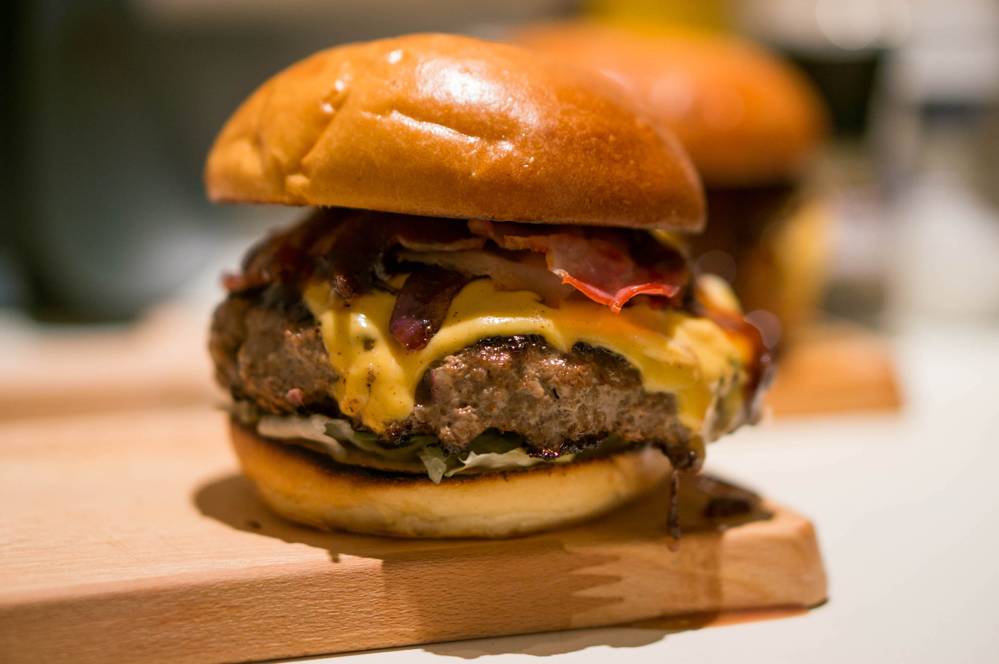

De Baconburger is een variätie van de hamburger. een baconburger is eigenlijk gewoon een hamburger met bacon en kaas er op. De hamburger komt oorspronkelijk uit Duitsland in de stadt Hamburg. Maar hij is bekend geworden in de Verenigde Staten. Dus de Baconburger ook. Dit is een recept voor 4 personen. Natuurlijk kan je de burger ook zelf indelen met verschillende ingrediënten. Als je bijvoorbeeld niet van de saus houdt kan je er ook geen saus op doen. hij is dus zelf in te delen hoe je het maar wil.
